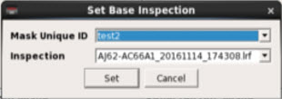

You
can specify any inspection as a base for comparison to others.
Procedure
Note: This capability is available
only for normal and privileged users. The Base
IR icon and Base Inspection
Settings menu option does not appear for other user
types.
To specify
a base inspection, click the Base IR icon in the Calibre DefectReview tool bar
or select Utilities > Base Inspection Settings. This invokes
the Set Base Inspection dialog box.Figure 1. Set Base Inspection Dialog Box
- In the Set Base Inspection dialog box, you can
specify an inspection as base through the Mask Unique ID and Inspection
name.
- Click Set to
set the base inspection.